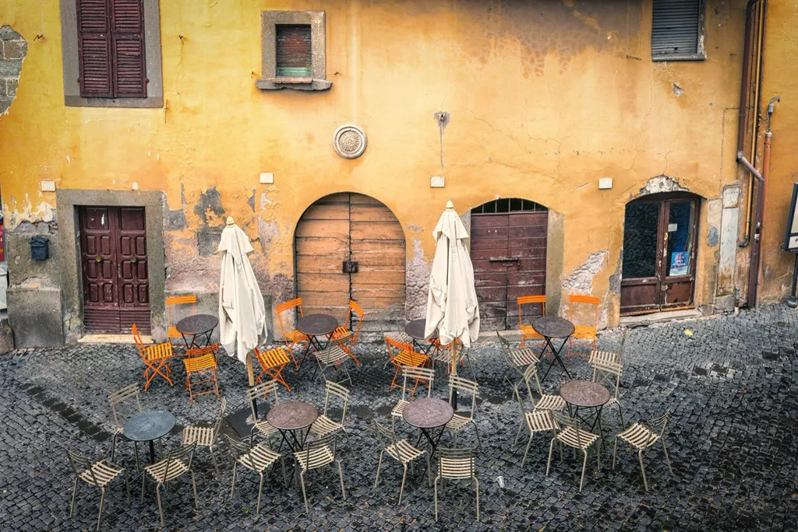
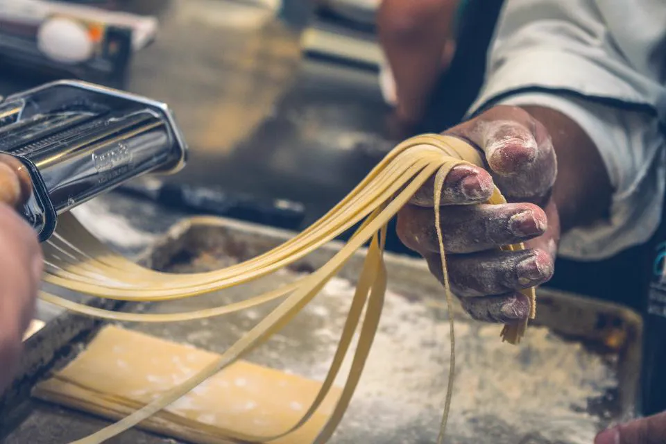
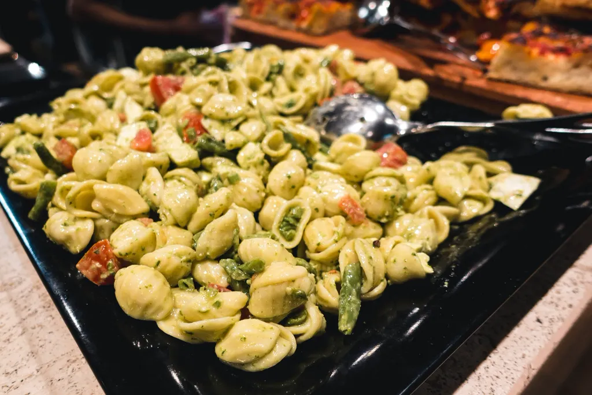

La sfoglia si tira a mano, ogni mattina.
Una piccola osteria sotto i portici di via Saragozza. Tortellini, tagliatelle e ragù come li fanno ancora le nonne bolognesi.
La sfoglia
Alle dieci, guardate dalla vetrina
Ogni mattina dalle 10:00 alle 11:30 la Rosa tira la sfoglia col mattarello e chiude i tortellini uno a uno. Passate davanti alla vetrina: i bambini possono guardare.
- Uova e farina, nient'altro
- Tirata sottile da leggerci attraverso
- Ripiena e chiusa a mano



Prenota un tavolo
Ventotto coperti, dentro e sotto il portico. Scegli un orario per stasera.
Persone
2
- Indirizzo
- Via Saragozza, Bologna (immaginario)
- Orari
- 12:00 – 14:30 e 19:00 – 23:00
- Chiuso
- Lunedì
- Come arrivare
- Bus 20 o 15 minuti a piedi da Piazza Maggiore, sempre sotto i portici